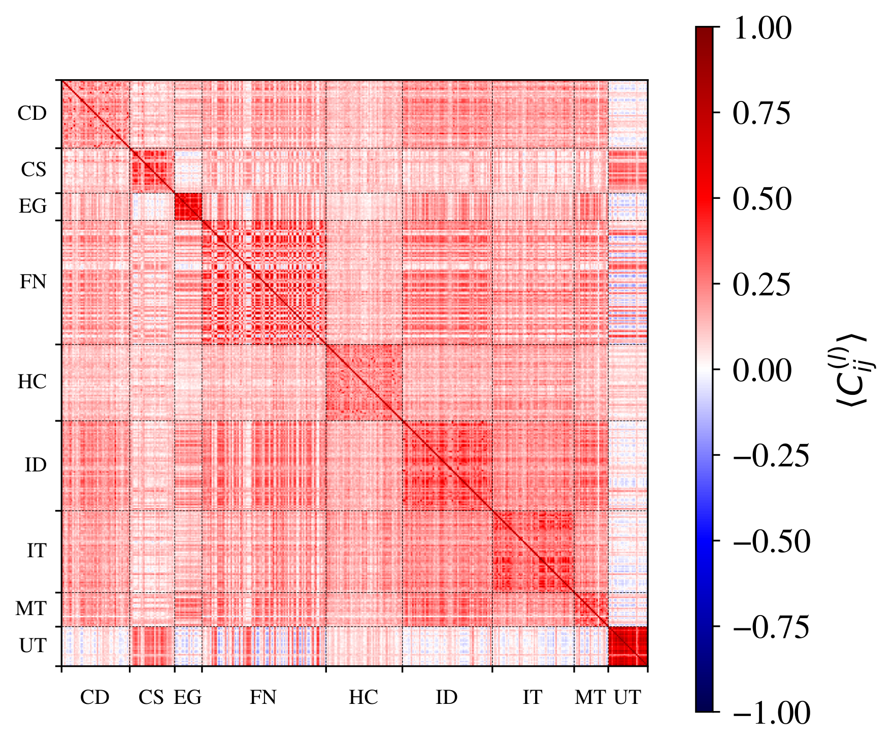

Undergraduate Thesis
Análisis de componentes principales de matrices de correlación de datos financieros del S&P 500 desde la econofísica
Abstract
This thesis studies collective behavior in financial markets using daily adjusted prices of a set of S&P 500 companies from January 3, 2012 to December 29, 2023. It analyzes how correlation matrices evolve over time through spectral methods, focusing on eigenvalues, squared eigenvector components, and eigenvalue-weighted eigenvector constructions. Within this framework, Discrete Market States (MS) are investigated, and the COVID period is examined as a distinct market regime. Squared eigenvector analysis combined with k-Means clustering highlights sectors and firms with stronger relative participation in the market’s collective dynamics, particularly for q = 40 and k = 5. Overall, the spectral-based approaches capture meaningful structure, but they do not fully reproduce the MS obtained by direct clustering of correlation matrices.
Illustrative Figure

Keywords
- Econophysics
- Discrete Market States (MS)
- COVID state
- Correlation matrices
- Eigenvalues
- Eigenvectors
- k-Means
Links
- Official direct thesis link .
- TesiUNAM . To find the record manually, enter Javier Gómez Morales in the “Palabra o frase” field.